About the game
Alex takes the night shift at an abandoned restaurant where children and guards have gone missing. As he restores power and searches the building, a torn family photograph leads him to the father’s confession and a way to free the children’s souls.
- 2D side-scrolling pixel-art survival horror
- Environmental puzzles, timed escapes, and checkpoint retries
- Encounters with Jollibee, Popo, and Hetty
- Windows x64 release target
Play / Download
The Windows download link will appear here after the release build is tested.
Download for WindowsExtract the complete release ZIP to a folder, then launch the game executable from that folder. Use the in-game Controls screen for the current key bindings.
Tested on: Windows 10/11 x64. About 850 MB unpacked. Any GPU with DirectX 11 or 12. Keyboard and mouse.
Media
Story stills from the opening, flashbacks, and ending.
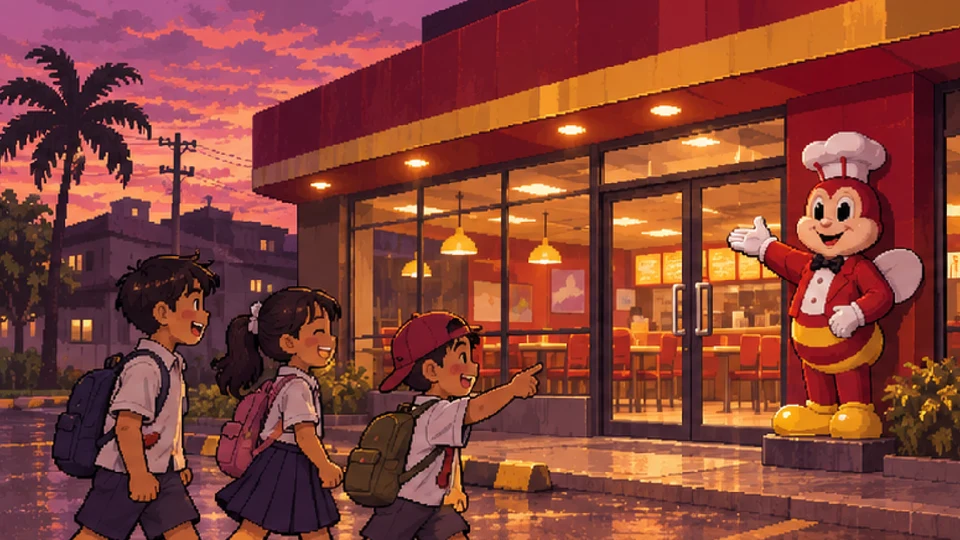
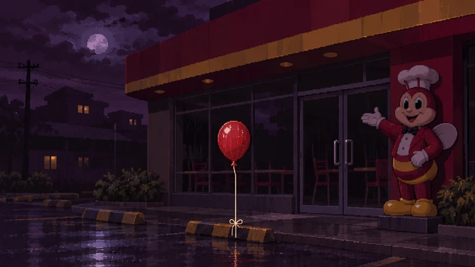
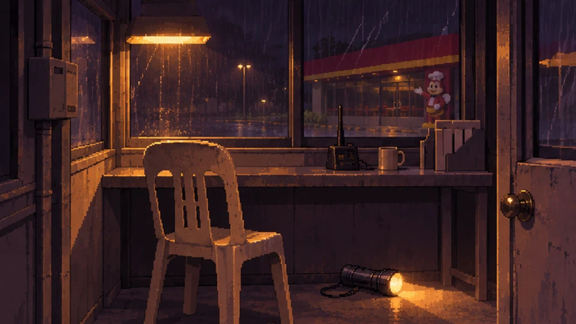
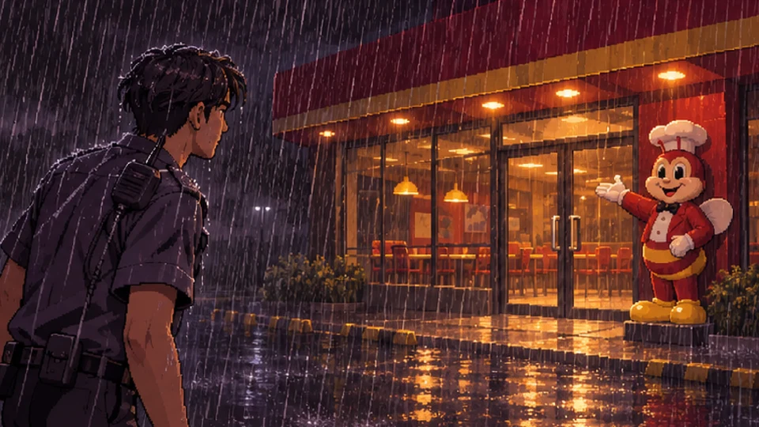
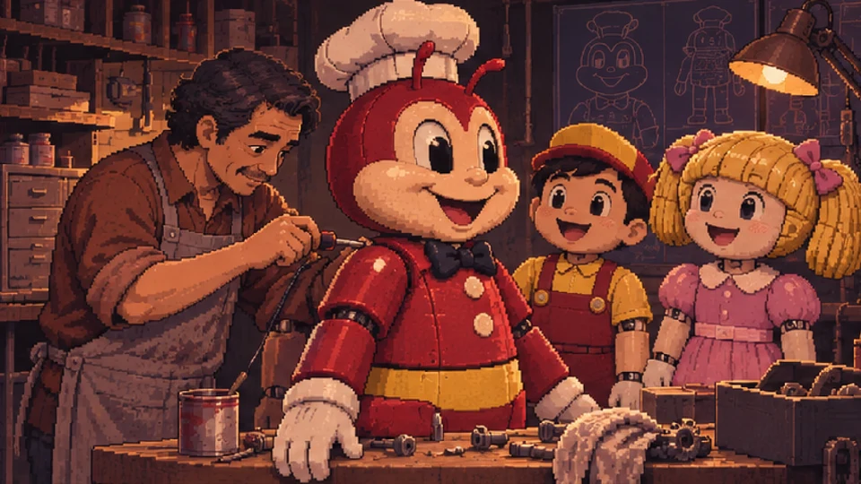
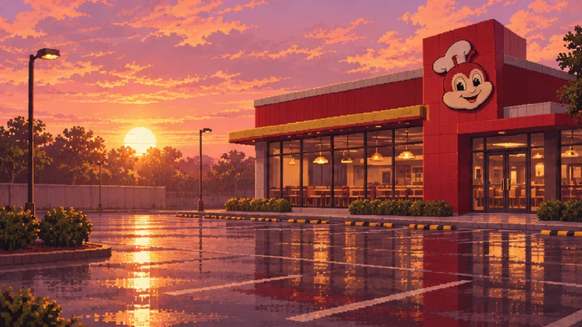
Gameplay
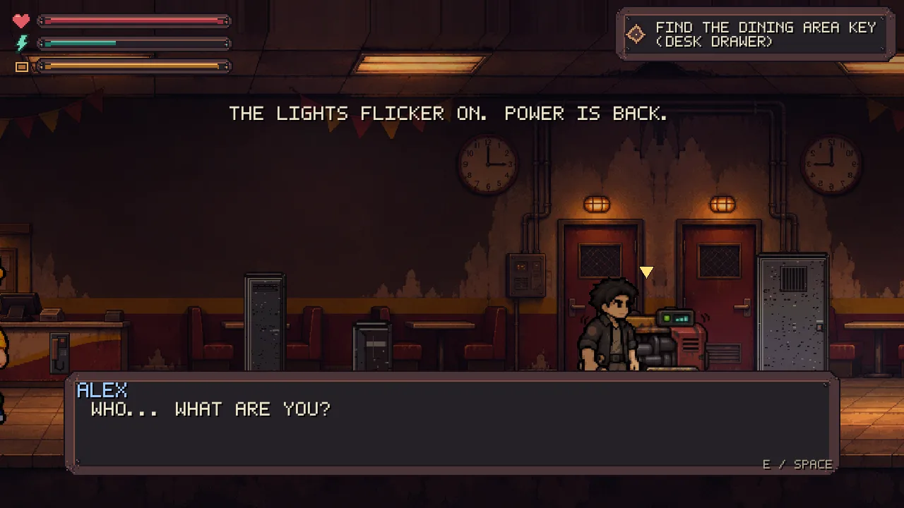
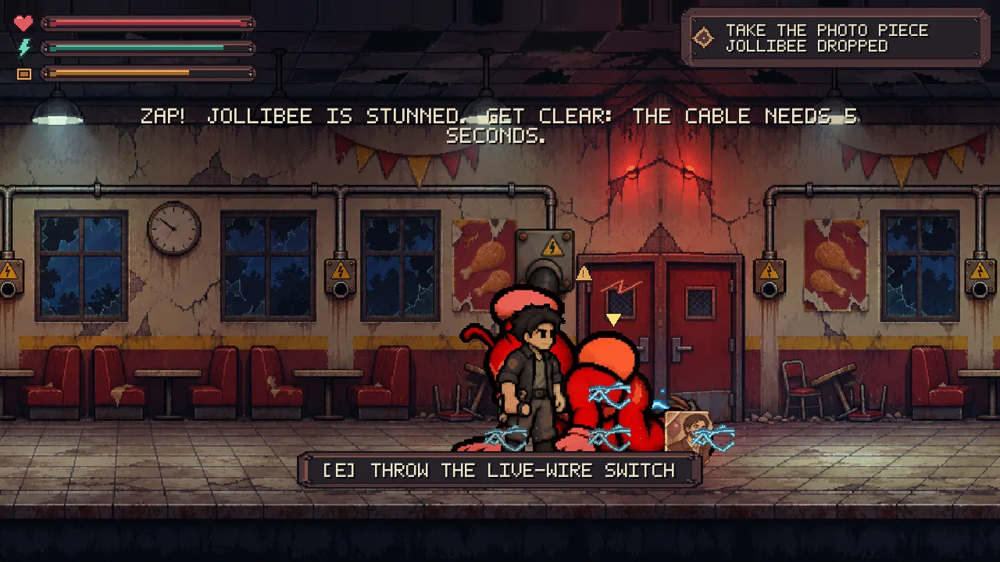
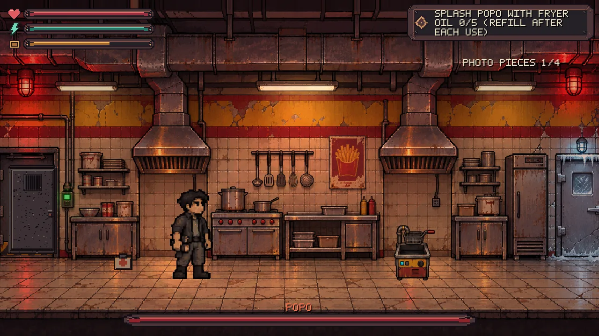
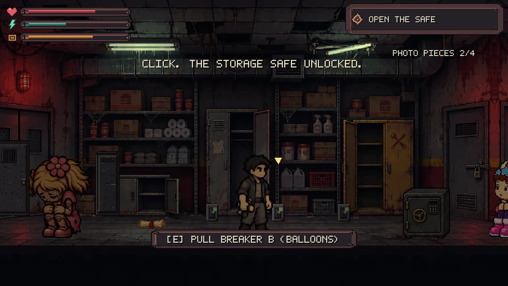
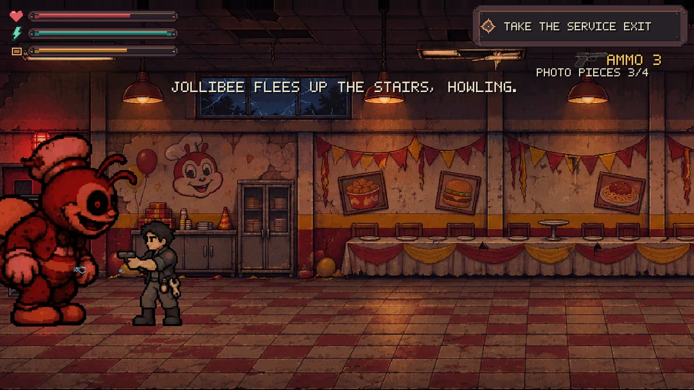
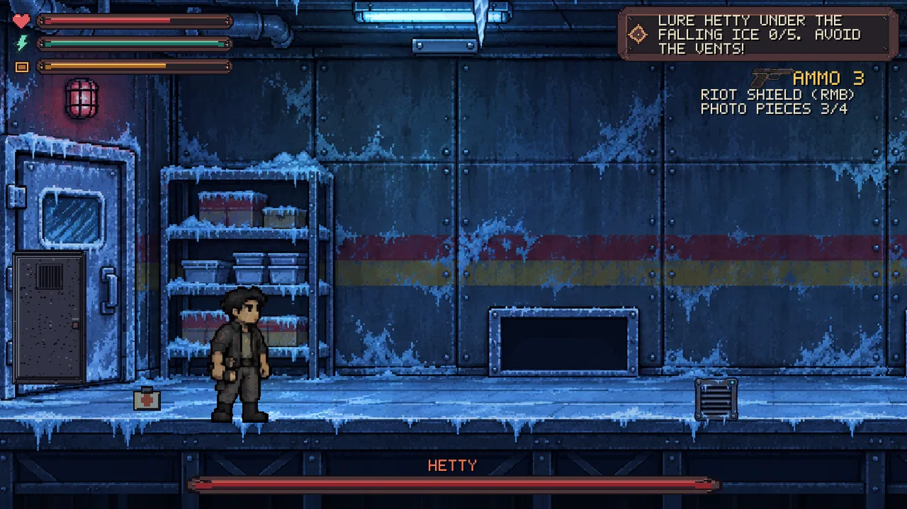
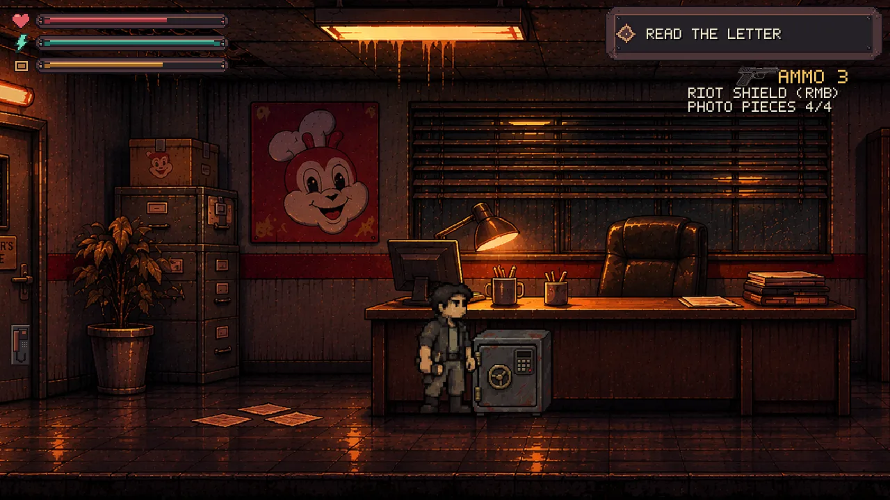
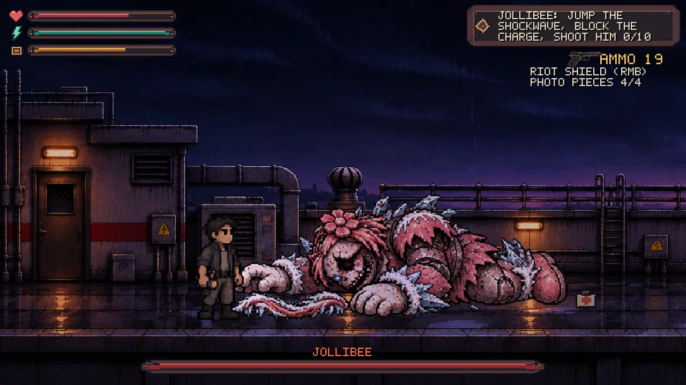
Devlog / News
Documentation
Download the full documentation (PDF) Game repository on GitHub
How to play
Explore each room and follow the objective. Search furniture and collect equipment and clues. Use the environment in early fights. Later, use movement, your shield, and careful shots to survive.
Controls
| A / D or arrows | Move |
| Shift | Run (uses stamina) |
| Space | Jump / next line |
| Ctrl or S | Crouch |
| W / S | Climb |
| E | Interact, hide, talk |
| F | Flashlight |
| Left mouse | Fire the handgun |
| Right mouse or Q | Riot shield (add W to hold it overhead) |
| Tab | Items and notes |
| Esc | Pause / skip cinematic |
Story and progression
- The Generator: find the flashlight, put the battery in the generator, take the dining key.
- The Dining Area: lure Jollibee onto the live cable (5 hits).
- The Kitchen: splash Popo with fryer oil, refill by hand (5 hits).
- The Birthday Party: CCTV footage, the storage key, Twirlie hiding with a handgun, Jollibee stage 2 (7 shots).
- The Restrooms: free Twirlie, get the riot shield from Yum.
- The Walk-In Freezer: lure Hetty under the falling ice, avoid the vents (5 hits).
- The Manager's Office: rebuild the family photo, enter the vault PIN, read the father's confession.
- The Rooftop: Popo, Hetty and Jollibee in their final forms until sunrise.
Modes: Tutorial, Normal and Hard. Emergency phones save your progress; Continue loads the last save.
Technical notes
The project targets Unity 6000.6.9f1 and Windows x64. Use the project's README and Build Profiles for the exact source layout, opening scene, version, and build steps. Project links and release test notes will be added after verification.
Team / Credits
Made by the IT306 development team:
- Romero, Bob Kiane A.
- Cagape, Arnel
- Duque, Carl Ulrick
- Putian, John Ray
- Gaitano, John Kirk
- Dizon, Rossen Dale
Asset credits
Character, background, prop and UI art: the team's supplied asset packs, The Final Clock-In Master Kit, and ChatGPT-made sprites to the team's brief. Sound: ChatGPT-generated cues (CC0), Kenney Interface Sounds and UI Audio (CC0, kenney.nl), and the Master Kit's synthesized effects.
Fan-made, non-commercial student project. Jollibee and Friends likenesses belong to Jollibee Foods Corporation.
Contact
For a bug report, include the build version, Windows version, chapter or room, and steps to reproduce the issue.
The team contact and feedback links will appear here when configured.